Tail call optimization, callee reusing the stack of the caller, is currently supported on x86/x86-64, PowerPC, and WebAssembly. It is performed on x86/x86-64 and PowerPC - lldb
Basic Knowledge
Registers
Processor operations mostly involve processing data. This data can be stored in memory and accessed from thereon. However, reading data from and storing data into memory slows down the processor, as it involves complicated processes of sending the data request across the control bus and into
the memory storage unitand getting the data through the same channel. To speed up the processor operations, the processor includes someinternal memory storage locations, called registers.The registers store data elements for processing without having to access the memory. A limited number of registers are built into the processor chip. – https://www.tutorialspoint.com/assembly_programming/assembly_registers.htm
In ARM 64, the following graph shows the registers’ roles.
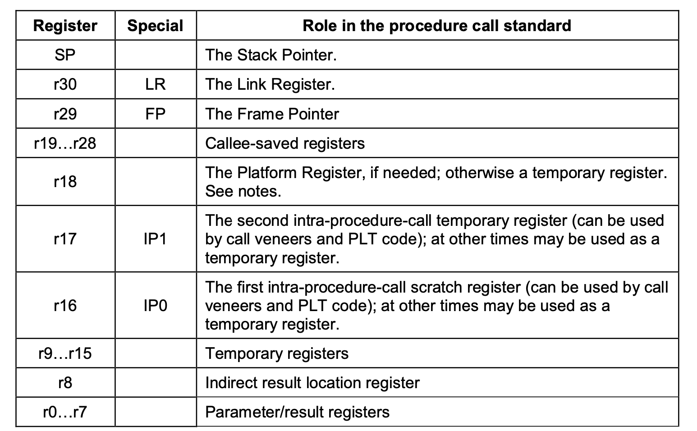
- The first eight registers, r0-r7, are used to pass argument values into a subroutine and to return result values from a function.
- The frame record for the innermost frame (belonging to the most recent routine invocation) shall be pointed to by the
Frame Pointer register(FP). The lowest addressed double-word shall point to theprevious frame recordand the highest addressed double-word shall contain the value passed in LR on entry to the current function.
Stack Structure
The stack is a
contiguous area of memorythat may be used for storage of local variables and for passing additional arguments to subroutines when there are insufficient argument registers available.The stack implementation is full-descending, withthe current extent of the stackheld in the special-purpose registerSP. –Procedure Call Standard for the ARM 64-bit Architecture (AArch64)- AArch64 ABI release 1.0
The ARM environment uses a stack that—at the point of function calls—is grows downward, and contains local variables and a function’s parameters. The stack is aligned at the point of function calls. Figure 1 shows the stack before and during a subroutine call.

Stack frames contain the following areas:
- The parameter area stores the arguments the caller passes to the called function or stores space for them, depending on the type of each argument and the availability of registers. This area resides in the caller’s stack frame.
- The linkage area contains the address of the caller’s next instruction.
- The saved frame pointer (optional) contains the base address of the caller’s stack frame.
- The local storage area contains the subroutine’s local variables and the values of the registers that must be restored before the called function returns. See Register Preservation for details.
- The saved registers area contains the values of the registers that must be restored before the called function returns. See Register Preservation for details.
In this environment, the stack frame size is not fixed.
Another stack frame layout graph comes from Procedure Call Standard for the ARM 64-bit Architecture (AArch64)- AArch64 ABI release 1.0
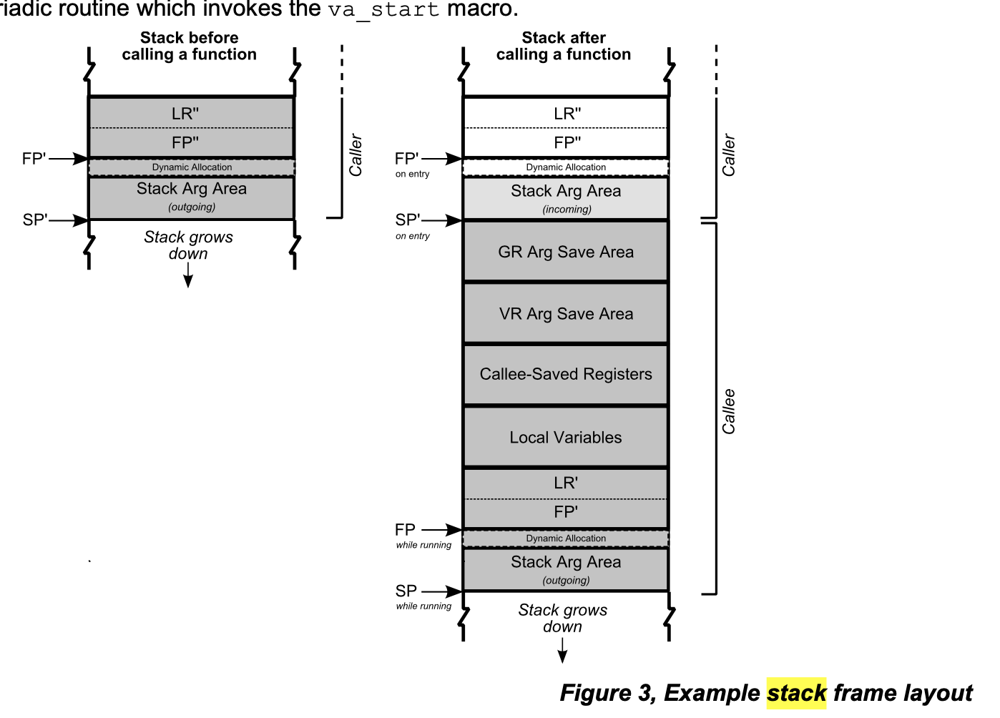
Passing Arguments
When functions (routines) call other functions (subroutines), they may need to pass arguments to them. The called subroutines access these arguments as parameters. Conversely, some subroutines pass a result or return value to their callers. In the ARMv6 environment, arguments may be passed on the runtime stack or in registers; in addition, some vector arguments are also passed passed in registers. Results are returned in registers or in memory. To efficiently pass values between callers and callees, GCC follows strict rules when it generates a program’s object code. - ARMv6
The base standard provides for passing arguments in general-purpose registers (r0-r7)
Returning Results
The manner in which a result is returned from a function is determined by the type of that result:
If the type,
T,of the result of a function is such thatvoid func(T arg)
would require thatargbe passed as a value in a register, then the result is returned in the same registers as would be used for such an argument.Otherwise,
the caller shall reserve a block of memory of sufficient size and alignment to hold the result. The address of the memory block shall be passed as an additional argument to the function inx8.The callee may modify the result memory blockat any point during the execution of the subroutine (there is no requirement for the callee to preserve the value stored in x8).
Tail call Elimination
Normal Case
Let’s say we have a method drawRect, which calls CGContextDrawPath
1 | - (void) drawRect: (NSRect) rect { |
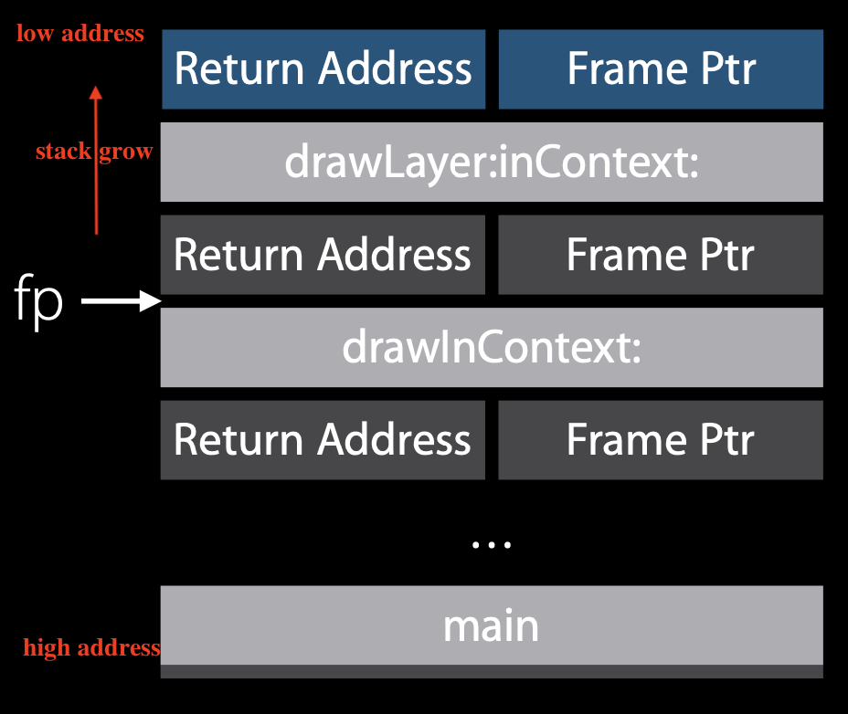
The above picture is the stack right before UIKit calls the drawRect method. This graph comes from WWDC.
Here, fp is the frame pointer .lr is the link register, which holds the next instruction to execute in the caller function( routines) that called the current function(subroutines). So the current function, subroutines know how to return to its caller.
When UIKit calls drawRect, firstly, drawRect will establish its call frame by pushing the return address from the link registe(lr )and previous valueof the frame pointer ( frame Ptr), on the stack. As we said before, there are registers store these two data.
1 | +0x00 push {r4, r5, r6, fp, lr} |
the frame poniter, fp , will store a new address, the value in sp + 12. Then, fp will be set up on a new base just as the following graph shows.
1 | +0x02 add fp, sp, #12 |
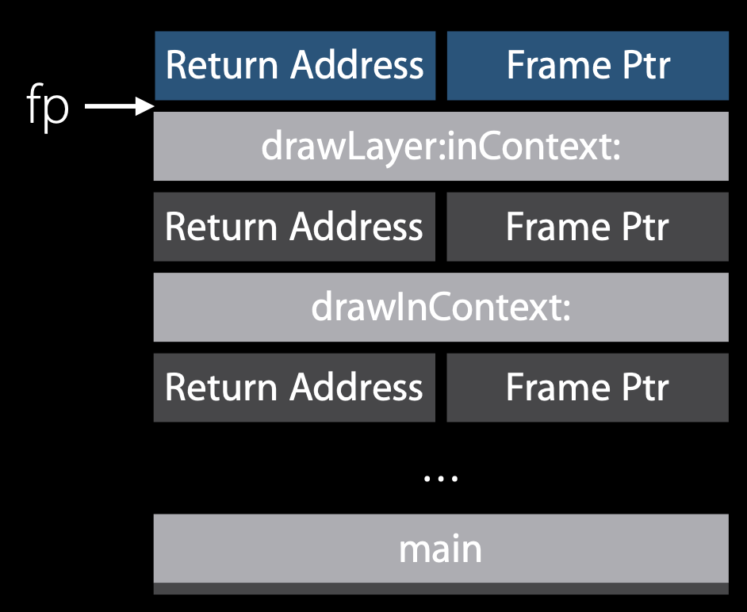
Then, drawRect makes room for storing local variables, and has its call frame on the stack.
1 | +0x04 sub sp, #180 |
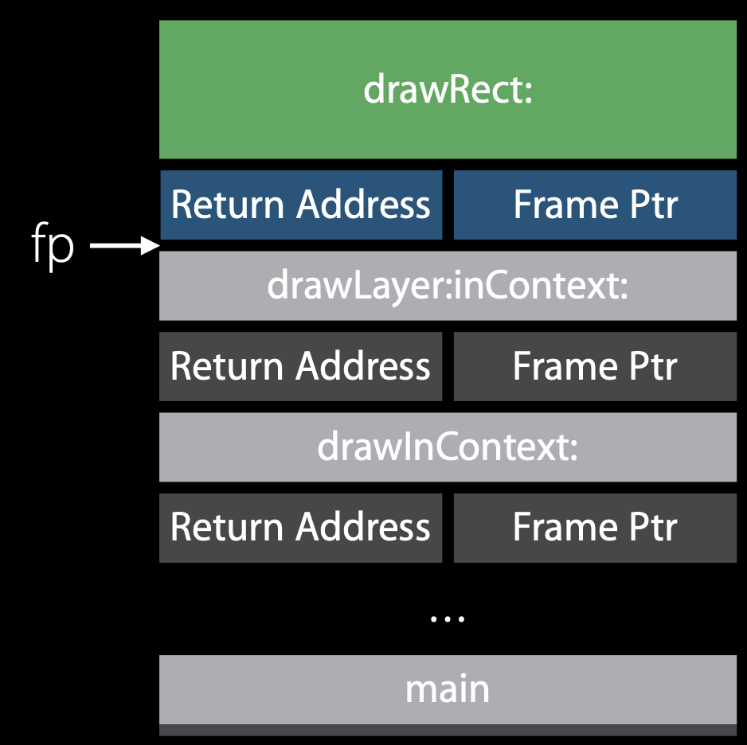
Next, drawRect calls CGContextDrawPath, which will also set up its call frame on the stack.
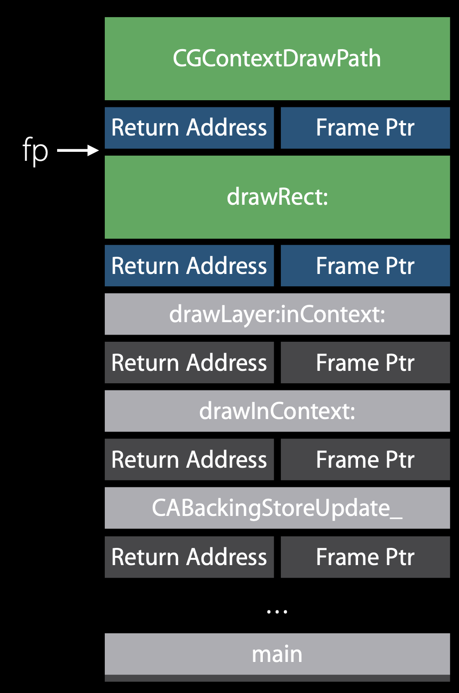
The way time profiler works, it uses a service in the kernel that will sample what the CPUs are doing at about 1000x per second.In this case, if we take a sample, we see that we’re running inside of context draw path.
Then the kernal looks at the frame Pointer register to see where the base of that function’s frame is and find the return address of who called it.
Backtrace
So, what is Backtrace? Well, by using frame pointer that was pushed on the stack, we know the the base address of the caller’s stack frame. Since every call frame of the method has store the base address of its caller’s stack frame, we can use this to go through the chain of the call frames in this stack.

Optimized case
In drawRect, after calling CGContextDrawPath , it is going to return, which means actually it will pop stack frame, restore fp, and then jump back to caller .
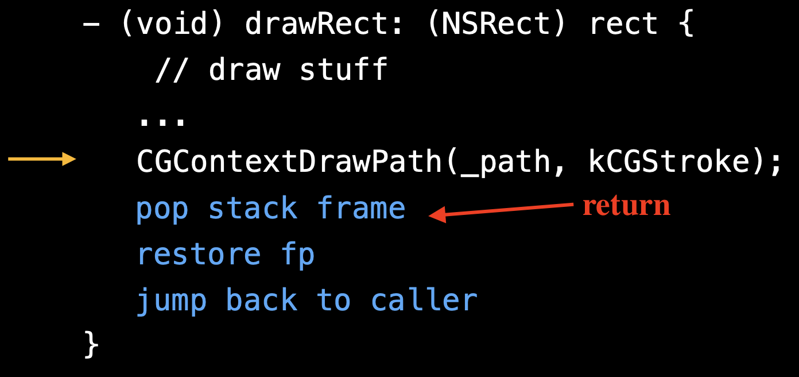
Since CGContextDrawPath needs nothing from drawRect, the params it needs arn’t from the call frame of drawRect , the compiler does an optimization here. It rearranges the code as follow. I pops stack frame of drawRect firstly, restores fp, then calls CGContextDrawPath . So it doesn’t have to jump back to caller , the address stored in the lr register.
Figure 1. it is going to pops stack frame
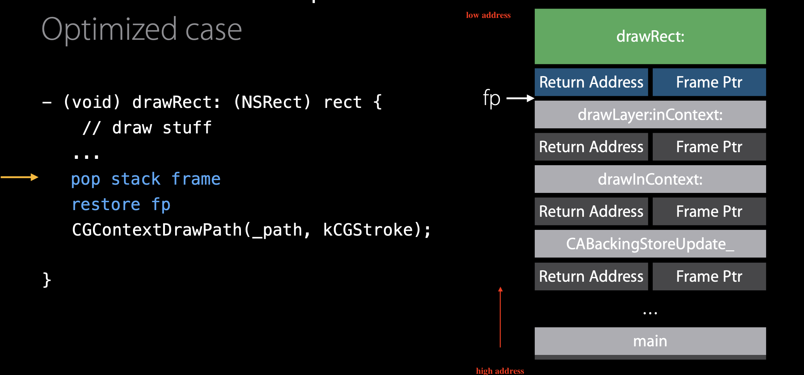
Figure 2. after poping stack frame of drawRect, the call frame of drawRect doesn’t exist on the Stack any more. Then sp moves.
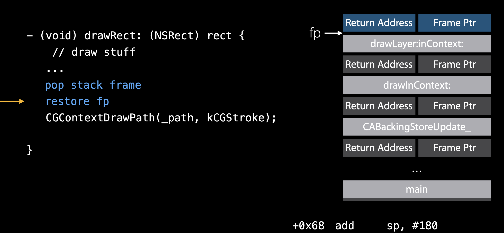
Figure 3. after restoring fp to the base address of its caller’s frame pointer, the return address and frame ptr of drawRect don’t exist on the Stack any more. Then sp moves.
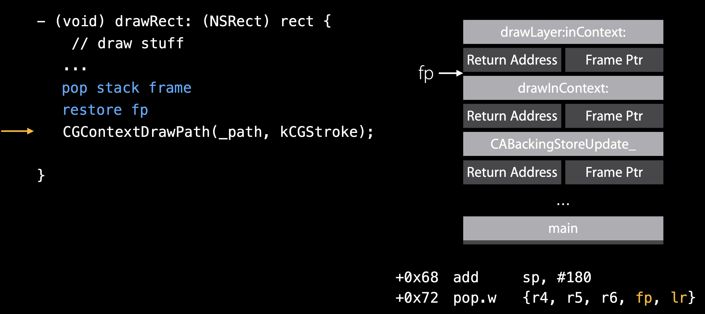
Finally, it calls CGContextDrawPath, which establish its own call frame on the Stack. So, the stack is like this now.
1 | +0x76 b.w "CGContextDrawPath$shim" |
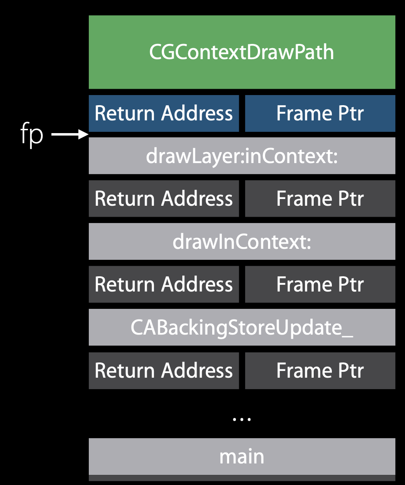
The difference in the Call Tree
The left side is the normal case, the right side is the optimized case where then call frame of drawRect will be removed from the stack in the optimized case. It looks like CGContextDrawPath is directedly called from drawLayout:inContext .
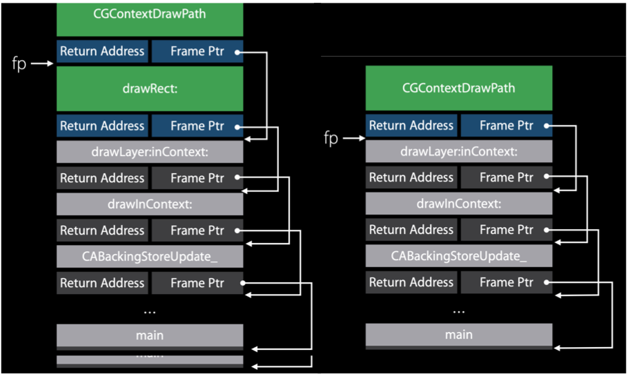
The benifit of Tail call Elimination
- Saves stack memory
- Keeps caches hot, and reuses the memory
- Best for recursive function tail calls, especially
tail call recursive code, where a function or method calls itself as the last line of code and then returns. With Tail call Elimination, the stack won’t grow so much that we can get hight performances.
Disabling
set this compiler flag when building, you can get better call tree in the Time Profiler when profiling app.
- CFLAGS=“-fno-optimize-sibling-calls”
Call Semantics
There is a useful trick to indentify if this is a Tail call Elimination case. That is to
look at the disaeembly and call sight of the last call

In normal call, it uses
a Branch and Link family of instructions(bl)Sets
lrto next address and jumps to the caller1
Caller: +0x174 blx "CGContextDrawPath $shim”
In optimized call, Tail Calls use
simple branches(b) , directedly jump into the function1
Caller: +0x174 b.w "CGContextDrawPath $shim”
scan qr code and share this article